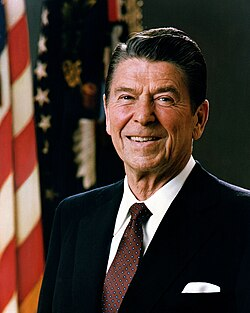

Ronald Reagan
President, 1911 to 2004

The 40th president, from 1981 to 1989. In a September 1987 speech to the United Nations General Assembly he said, "I occasionally think how quickly our differences worldwide would vanish if we were facing an alien threat from outside this world." The line is usually read as a Cold War metaphor; his handwritten edits to the draft show he cared about keeping it. 1,2
A 1974 sighting from the governor's plane is often repeated, but it rests on the pilot's later recollection rather than any record from the time.
Open in the interactive Watcher
Related
- The President President, 1981 to 1989